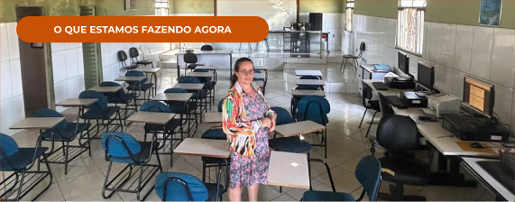
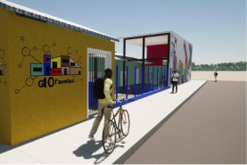
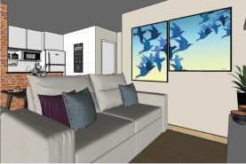
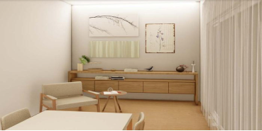
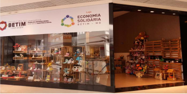
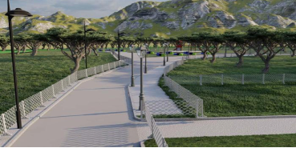

1
Serviços à comunidade
Projetos de arquitetura, assistência técnica em habitação de interesse social (ATHIS), design e soluções organizacionais e tecnológicas para quem mais precisa.
ESCRITÓRIO MODELO · UNA CAMPUS BETIM
Projetos de arquitetura e engenharia, assessoria
técnica e capacitações para comunidades,
prefeituras e empreendedores.

DEGRAU
ESCRITÓRIO MODELO DE
ARQUITETURA E ENGENHARIA
2018
Fundação do projeto
5
ODS atendidos
5
Áreas de conhecimento
2
Eixos de atuação
Sobre o DEGRAU
O DEGRAU é um projeto de extensão interdisciplinar da UNA Campus Betim, fundado em agosto de 2018 por iniciativa de alunos com orientação docente. Atua como agente de transformação social e fomento ao desenvolvimento regional.
Estudantes de Arquitetura e Urbanismo, Design de Interiores, Engenharias e Tecnologia da Informação trabalham juntos, em squads, para resolver problemas reais de comunidades, prefeituras, organizações sociais e microempreendedores.
Erradicação da pobreza
Saúde e bem-estar
Educação de qualidade
Redução das desigualdades
Cidades e comunidades sustentáveis
Nosso propósito
Capacitar, engajar e preparar os estudantes para o mercado de trabalho por meio de vivências práticas e corporativas, estimulando o protagonismo e o desenvolvimento de soluções reais que promovam cidadania, inclusão e o fortalecimento socioeconômico regional.
Aproximar os estudantes do mercado local, com networking ativo junto a empresas e profissionais de Betim.
Desenvolver competências práticas e comportamentais por meio de palestras, workshops e dinâmicas organizacionais.
Prestar suporte técnico a prefeituras, instituições sociais e populações em situação de vulnerabilidade.
Fomentar o protagonismo e o espírito empreendedor em equipes multidisciplinares.
Disseminar conhecimento técnico e corporativo com capacitações abertas à comunidade.
Alinhar as práticas aos programas de Cidadania e Trabalho Digno e Inclusão e Direitos Humanos.
O que fazemos
1
Projetos de arquitetura, assistência técnica em habitação de interesse social (ATHIS), design e soluções organizacionais e tecnológicas para quem mais precisa.
2
Congressos, eventos e networking com empresas e profissionais da região de Betim, aproximando estudantes das oportunidades de trabalho.
3
Cursos, palestras, oficinas e treinamentos abertos à comunidade interna e externa, democratizando o acesso ao conhecimento.
Portfólio

O que estamos fazendo agora
Projeto de reforço escolar e tecnologia para crianças de 7 a 13 anos, alinhado ao ODS 4 (Educação de Qualidade). Ação em andamento no semestre 2026/02.

Reforma de 696 m² em Jardim Teresópolis, com sala multiuso, sala de costura, rampa de acesso e fachadas para grafite.

Projeto de decoração de interiores que levou mais qualidade de vida aos moradores do empreendimento Parque Irajá.

Assessoria gratuita em projetos de arquitetura e interiores para quem não tem condições de arcar com o serviço.

Loja do Fórum Municipal de Economia Solidária no Partage Shopping, feita com pallets doados e hoje referência no país.

Requalificação de um parque de 0,58 ha, com pista de caminhada, horta comunitária e integração ao Circo de Todo Mundo.
Território e comunidade
Atuamos no entorno da UNA Campus Betim, priorizando demandas que promovam inclusão, cidadania e trabalho digno, com foco em grupos que buscam superar vulnerabilidades socioeconômicas e entrar no mercado de trabalho.
Apoio técnico e organizacional a pequenos negócios.
Instituições da sociedade civil que atuam no território.
Soluções para quem opera com recursos limitados.
Pessoas que buscam suporte técnico e capacitação.
Equipe
Professor orientador, equipe atual e as coordenações que conduziram o DEGRAU desde 2018.

Professor Orientador

2026/02

2018–2019

2019

2020

2020/1

2020/2 e 2021/1

2020/2 e 2021/2

2021/1
Contato
Prefeituras, instituições e empresas: fale com a coordenação.